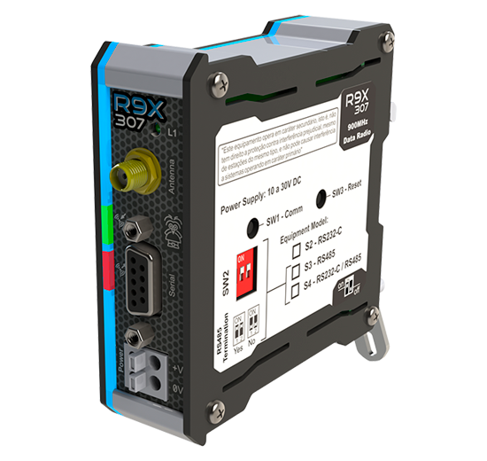

Aplicações em Saneamento e Óleo e Gás
Os rádios XBee-PRO e o modelo R9X307 são dispositivos de comunicação comercializados e integrados pela HI Tecnologia para conversão de meio físico, permitindo o tráfego de dados seriais ou ethernet via interfaces wireless em processos industriais. Nessa etapa, você aprenderá o básico conceitual dessas linhas de rádio de 900MHz e a utilizá-las no ecossistema de automação através de topologias ponto a ponto, ponto-multiponto ou redes malha (Mesh). Para a configuração, diagnóstico e testes de comunicação entre as redes de rádio, você utilizará ferramentas de software essenciais como o XCTU. Não se esqueça de salvar os arquivos das aulas em pastas individuais para cada tema, na sua pasta localizada em: L:\GAdmn\DSuporte Tecnico\Minha Pasta.

Leia a documentação sobre rádios para entender as características técnicas e de configuração dos equipamentos.
Utilize o software XCTU para encontrar rádios no ambiente. Assista ao vídeo tutorial para o passo a passo da configuração e varredura de dispositivos.
Faça uma aplicação para comunicar 2 CLPs via Rádio seguindo a estrutura abaixo: